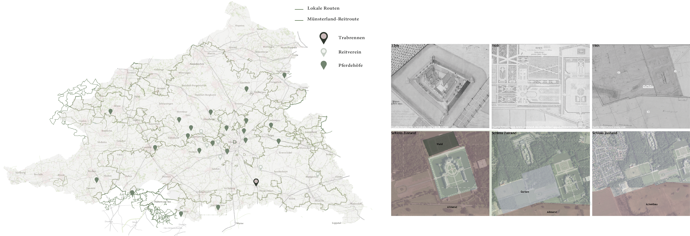
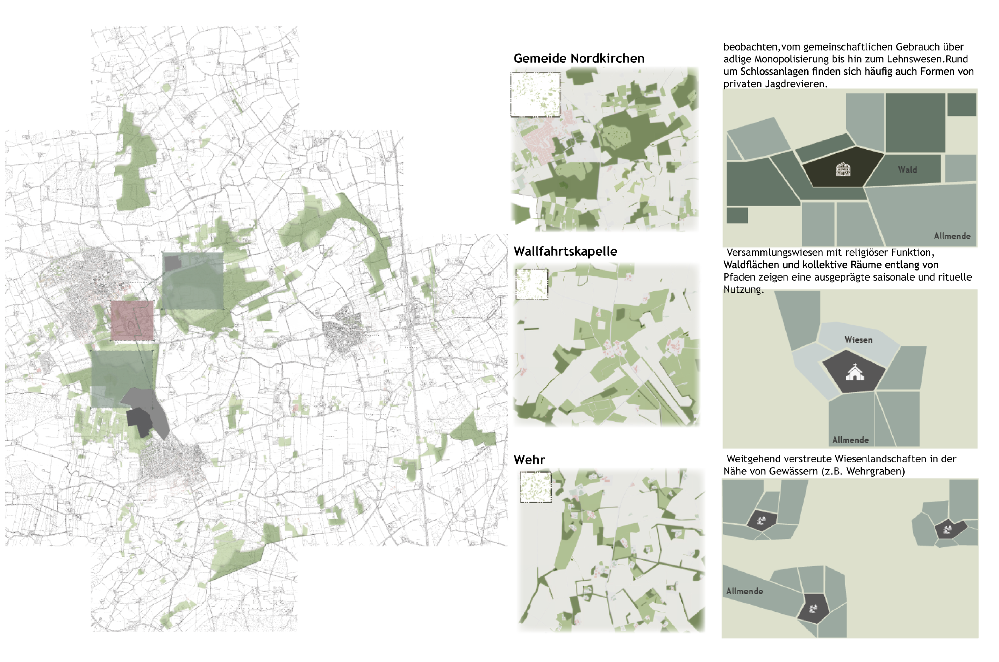
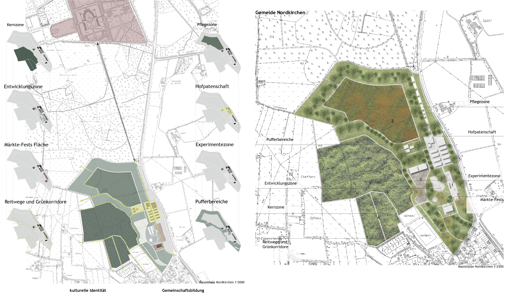
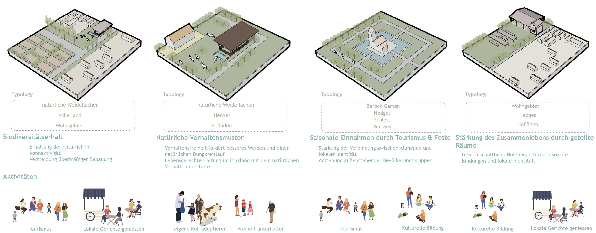
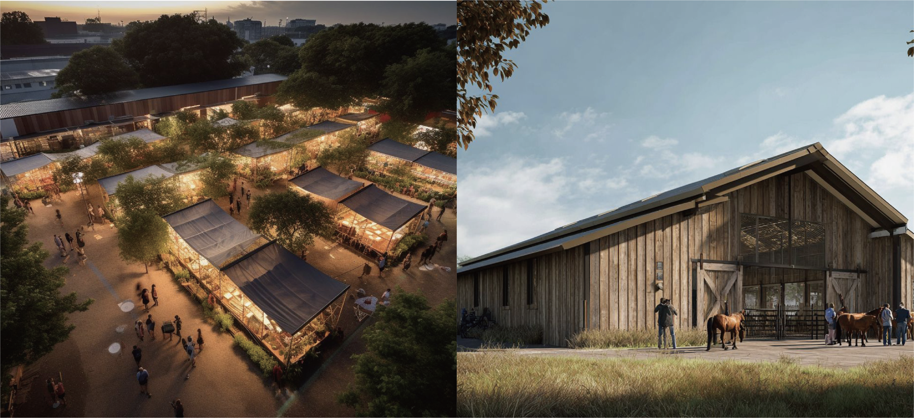

Living Field
A productive landscape where ecological processes, research infrastructure and public learning are brought into one visible field.
- Location
- Muesterland, Germany
- Year
- 2025
- Type
- Openspace planning
- Focus
- Research by Design
- Role
- Design · Visualization

Research becomes landscape.
The proposal connects experimental cultivation, water processes and shared campus space. Technical systems are not hidden; they become spatial elements that support education, biodiversity and everyday use.
Rather than a static landscape, Münsterland is conceived as a shared system shaped by ecological processes and collective stewardship. Drawing on the concept of the commons, the project connects ecological corridors, shared spaces, and local networks to support resilient landscapes and long-term community participation.



